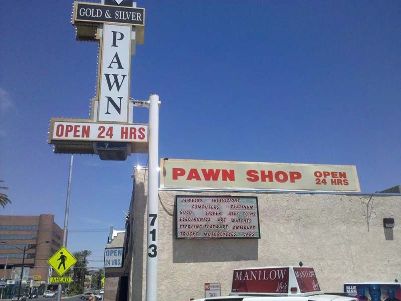

<template>
  <div class="MainContainer">
    <div class="TitleImg center">
      
    </div>
    <div class="single-wide">
      <h1>Free on Fremont</h1>
      <h3>What to do and see for free while on a Fremont St. Coupon Run </h3>
      <h4>ONE-OF-A-KIND HISTORY</h4>
      <p>Throughout Fremont St are vintage refurbished neon signs. Perfect for picture taking and a great piece of nostalgia. The signs are have been salvaged from historic Las Vegas. </p>
      <h4><a href="http://www.binions.com/million_dollar_photo.php">Million Dollar Photo at Binion’s  </a></h4>
      <h4>Downtown Freebie </h4>
      <p>Take a free photo will a million dollars cash at one of downtown’s iconic casinos, Binion’s. Photos are taken from 10:00 a.m. to 11:00 p.m. each day. This photo op is one of the best free things to do in downtown Las Vegas. <a href="http://www.binions.com/million_dollar_photo.php">Learn more.</a> </p>
      <h4><a href="https://www.thecal.com/dine/market-street-cafe?imc=CA_1051">Rub Happy Buddha’s Belly  </a></h4>
      <h6>GET LUCKY IN LAS VEGAS</h6>
      <p>Everyone could use some luck in Las Vegas. Make sure to rub the Happy Buddha’s belly at The California Hotel & Casino. The statue can be found in the hotel’s registration area. By the way, coins left at the statue are collected and donated to charity.  </p>
      <h4><a href="http://www.thed.com/">World’s Largest Keno Board at The D </a></h4>
      <h6>EVERYTHING’S BIGGER IN LAS VEGAS </h6>
      <p>See your numbers as they’re drawn with this live feed of a classic Vegas casino game. The board shows live keno games as they unfold in the casino’s second floor keno lounge. Stop by <a href="https://www.thed.com/casino/games-offered/">The D Las Vegas to play.</a> </p>
      <h4><a href="http://www.mainstreetcasino.com/?imc=MS_1050">Berlin Wall at Main Street Station </a></h4>
      <h6>A LITTLE PIECE OF HISTORY  </h6>
      <p>Inside the men’s restroom at Main Street Station, there’s a huge slab of the Berlin Wall. Yes, that Berlin Wall. Women can ask to be escorted in by security to see this surprising curiosity, too. It’s a hidden gem in hotel with dozens of antiques and curiosities from around the world. Stop by the registration desk for a brochure listing all the antiques around the hotel. </p>
      <h4><a href="http://www.fremontcasino.com/?imc=FR_1052">Sharpshooter Club at Fremont Casino </a></h4>
      <h6>HOT ROLLS</h6>
      <p>If you’re into craps, check out the Sharpshooter Club hall of fame at <a href="https://www.fremontcasino.com/?imc=FR_1052">Fremont Casino</a> in downtown Las Vegas. Plaques immortalize the names of players who have had hot rolls on the hotel’s craps tables. There’s another wall of plaques at the Fremont’s sister hotel, the nearby <a href="https://www.thecal.com/?imc=CA_1051">California Hotel & Casino.</a> How serious is the Fremont about craps? It’s the only casino we know of that has a roll counter on its craps tables to track the hot rolls for posterity. Love it! </p>
      <h4><a href="http://goldengatecasino.com/">Historic Artifacts at Golden Gate </a></h4>
      <h6>SEE HOW IT ALL BEGAN </h6>
      <p><a href="https://www.goldengatecasino.com/">The Golden Gate Hotel & Casino</a> opened in 1906, so there’s a lot of history in this still vibrant casino. Near the hotel’s registration desk, check out the little known artifacts on display, including gaming ledgers from the early 1900s, vintage chip racks and more curiosities from the early day of Sin City. </p>
      <h4><a href="https://www.goldennugget.com/las-vegas/amenities/h2o-pool/?utm_campaign=lasvegas-misc&utm_medium=partner&utm_source=vegasexperience">Shark Tank at Golden Nugget </a></h4>
      <h6>SWIM WITH THE SHARKS (NOT REALLY) </h6>
      <p><a href="https://www.goldennugget.com/las-vegas/amenities/h2o-pool/?utm_campaign=lasvegas-misc&utm_medium=partner&utm_source=vegasexperience">The Golden Nugget’s</a> $30 million pool is an absolute stunner, not to mention an incredible feat of engineering. The Tank features a 200,000 gallon shark tank visitors can experience at a distance or up close by riding the pool’s three story water slide.  </p>
      <h4>Pick with Vegas Vic </h4>
      <h6>HOWDY PODNER</h6>
      <p>Vegas Vic (originally commissioned as a cartoon character by the Las Vegas Chamber of Commerce in 1947) was erected on the exterior of The Pioneer Club (now a gift shop) in 1951.   </p>
      <h4><a href="http://www.fremonteast.com/">Fremont East Entertainment District  </a></h4>
      <h6>Downtown Vibes</h6>
      <p>Downtown’s vibrant restaurant and bar scene make Fremont East a great way to spend an evening on the town in Las Vegas. Some best bets for restaurants are La Comida and Le Thai, and no visit to Fremont East would be complete without a stop at Commonwealth, Therapy restaurant, Flippin’ Good Burgers & Shakes or Downtown Cocktail Room.  </p>
      <h5>“Seriously, why tour the world when all you have to do is visit Las Vegas and see all the highlights in one location?"        </h5>
      <h6><i>Jeff Maguire </i></h6>
      <h3>Historical Downtown Vegas: </h3>
      <p>For thousand of years there had been Native American tribes in the Las Vegas Valley, but it wasn’t until John Charles Fremont arrived in 1844 that Las Vegas (Spanish for The Meadows) was officially put on the map.  Fremont not only charted important trails crisscrossing the American West, but also helped reroute the Old Spanish Trail (established 1829) from Santa Fe to Los Angles near an oasis located in today’s Downtown Las Vegas.  Fremont’s mapmaking, the booming California Gold Rush, and the snow-free Western trail through town helped Downtown Las Vegas grow.  With the railroad arriving in 1905, development along Fremont Street straight out from the train station formed Downtown Las Vegas.  The city’s oldest casino (the Golden Gate from 1906) still stands on Fremont Street, but many other things have changed.  Fremont Street became home to many other firsts in Vegas over the years including the 1st phone in 1907, the 1st paved road in 1925, later the 1st traffic light, and city’s 1st neon light at the Overland Hotel in 1928.  There was a bit of a Speakeasy era in Vegas as gambling was outlawed from 1909-1931 (drinking 1920-1933).  Pressure from The Great Depression and an influx of workers building the Hoover Dam (1931-1935, originally called Boulder Dam) forced them to open gambling back up with the first official Nevada gaming license going to Fremont Street’s Northern Club.  With gambling legal again, Fremont Street boomed through mobster influence although the casinos were mainly dingy sawdust-floored Western-themed establishments. </p>
      <p>Finally, Downtown started classing up when the Horseshoe became the first casino to get carpeting and new hotels like Binions pushed the limits to bring in more high rollers.  Fremont Street turned into a sea of dizzying neon marquees nicknamed the Glitter Glutch by the 1940s and started adding large casino complexes by the 1950s.  As the only place in America with statewide gambling from 1931-1979, Downtown Las Vegas became a magnet for Hollywood celebrities looking to escape California.  Today the highlights of Downtown Las Vegas still center on Fremont Street with its mixture of vintage touches and modern technological features.  Visitors looking for flares of Americana and old world Vegas will love the historic neon signage, free nightly concerts, cheap drinks, loose slots, and a compact feel of Fremont Street.  Seekers of more modern flair will enjoy not only the zip line that cuts right through Downtown, but also the Fremont Street Experience which is by far Downtown’s main highlight. </p>
      <h3>HERE ARE SOME GREAT STOPS ON FREMONT STREET </h3>
      <ol>
        <li>Main Street Station Casino:<p>The railroad-themed Main Station Casino and Brewery serves as a living museum of Casino antiques in the hotel lobby, main gambling flooring, and even outside.  The antiques can be seen 24 hours a day and the front desk has a really handy self-guided maps showing where each one is and explaining it.  By far the coolest artifact in the Main Station is in the men’s bathroom where the urinals are mounted to an actual section of the Berlin Wall!  The 12-foot-tall Berlin was 91 miles long and separated Communist East Berlin from West Berlin during the Cold War from 1961 through 1989.</p>
          <p>Other antiques include red granite outdoor street lamps which were made in 1870 and sat in Brussels, Belgium until WW1.  Inside the casino, the main chandelier from the Figaro Opera House in Paris, France .and the ones in the Garden Court Buffet were made in the 1850’s for the San Francisco Opera House.  The main gambling room looks like an old Victorian-Era railway station with exceptional stained glass and brass chandeliers from the 1800s.  The carved Mahogany woodwork in on the hotel’s reception desk was originally the inside of a drugstore in Covington, Kentucky over 100 years ago.  Of the same era, the bronze doors and windows at the entrance to the Player’s Club was once the facade of the Kuwait Royal Bank in London, England.  If you search around the second floor there is a large vintage pool table which was used in the hit 1961 movie The Hustler. </p>
          <p>The train and railway theme throughout the hotel is very predominate as you follow the walking tour and these elements are best seen in the Pullman rooms.  The Pullman family owned one of the railway car manufacturing companies in the country in the early-1900s.  The massive wooden doors from their Illinois mansion led the way to the Pullman Grille.  The grille feature a fireplace from a castle in Scotland and a complete railway car once owned by Little Women author Louisa May Alcott which you can go inside.  The Main Street Station was also once home to the private railway car used by Buffalo Bill Cody and Annie Oakley to travel the country in Buffalo Bill’s Old West Show from 1906 to 1917.  Unfortunately, the Buffalo Bill Car was removed in 2017 for the development of a neighboring tower the rest of the antiques at the casino make it worth a stop.  </p>
       </li>
       <li>Fremont Street Experience:
         <p>The intersection of Fremont Street and Main Street is where Las Vegas was first founded in 1905 and is now the marks the beginning of the Fremont Street Experience.  At the foot of this crossroads is the Plaza Hotel (website), known as the poor man’s casino.  Even if you are not a penny pincher, head to the top of the domed viewing platform before entering the Experience to get a great elevated view down Fremont Street. </p>
         <p>It was here at the Plaza Hotel (formerly Union Plaza) where the original Las Vegas train station (Salt Lake Depot) opened in 1905 to service the Clark Line (later bought by Union Pacific).  This route connected Salt Lake City to Los Angles and cut the transportation down to just one day, which was a big feat for the time.  This train traffic led to the founding of Las Vegas, the development of Fremont Street (paved in 1925), and all of the entertainment in Sin City.  While an influx of people was visiting Las Vegas during the construction of the Hoover Dam (1931-35) the ban on gambling (1909-1931) and drinking (1920-1933) were lifted which led to a business boom.  By 1940s Fremont Street was a sea of Neon Lights and Fremont became nicknamed the Glitter Gulch.  The full Fremont Street Experience is seven blocks long but you’re sure to be drawn to the 4-block-long, 90-foot-wide canopy over the street filled with 12.5 million colored LED bulbs called Viva Vision.  The entire area really comes to life on the top of every hour from 8pm to 1am when Viva Vision turns into a full-on light and video show synced to music on a concert quality sound system.  The light shows themselves are a reason to put Downtown Vegas on your to-do list, but stay a little longer and you’ll find a lot more to love. </p>
         <p>Free Light Show: Daily 8pm-1am at the top of the hour.  Free Live Music: With 3 stages there is nightly free live music.   </p>

      </li>
      <li>Golden Gate Casino:
        <p>Founded in 1906, the Golden Gate is the oldest casino in Vegas and where it all got started.  As the railroad began to cut through Las Vegas from Salt Lake City to Los Angles, John F Miller started a hotel inside a canvas tent here (across from the train station) between 1903-05.  The following year Miller was done with a permanent structure known as the Hotel Nevada (later the Hotel Sal Sagev).  In 1907 the first phone in Las Vegas was installed in the busy Hotel Nevada.  Because gambling was made illegal in Nevada in 1909 along with drinking in 1920, the casino had to run underground until the bans were lifted in 1931 and 1933 respectively.  The name was changed to the Golden Gate in 1955 in honor of a group of investors from Oakland California who fronted the money for a large casino expansion in the hotel.  Today the bars are the main attraction at the Golden Gate Casino as they are where Frank Sinatra and Sammy Davis Jr drank during the Rat Pack days.  The quality of bartending is just as good today as it was then as the current staff has over 100 bartending championship trophies between them.  An insider tip is that you can get Golden Gate’s renowned, and huge, shrimp cocktails for just $3.99 if you sign up for their free Players Club Card.</p>
      </li>
      <li>Cowboy Vic & Vegas Vickie Signs:
        <p>Make sure to check out the huge Vegas Vic Cowboy and Vegas Vickie neon signs sitting at Fremont Street’s first covered intersection which are our favorite vintage signs.  The iconic waving Cowboy Vic was added to the Pioneer Club (1942-1995) in 1951 and his cowgirl partner Vegas Vickie was added to the Glitter Glutch Strip Club (1980-2016) when it opened in 1980.  Vickie is sometimes incorrectly called Sassy Sally after a strip club that sat next door from 1981 until 1999.  When the Freemont Experience was opened in 1995, Vic and Vickie were married in a formal ceremony covered by the local newspapers and news stations.  Vickie was removed for restoration in 2017 with plans to bring her back to Fremont Street soon.  Vegas has become known for its dizzying displays of neon lights since the first one was installed at the Oasis Café on Fremont Street in 1929.  This movement helped Downtown Las Vegas become a destination known as the Glitter Gluch and the signs have become an attraction of their own.  More vintage neon signs can be seen later on this Downtown Las Vegas walking tour at Fremont Street East as well as the popular Neon Museum. </p>
      </li>
      <li>Golden Nugget Casino:
        <p> Known locally as The Nugget, the Golden Nugget offer the most unique experiences in Downtown Las Vegas. The experiences start when you check out the Hand of Faith which is the biggest gold nugget in existence at 61 pounds 11 ounces.  </p>
        <p>About The Golden Nugget Casino:  The Nugget also has the most unique pool experience in Vegas called The Shark Tank Pool (website) where they have you swimming with the sharks.  A 30-foot-high glass slide forms a long tunnel taking your right through the heart of a giant aquarium full of sharks. If you want to learn more about the sharks at The Nugget you can get a professional biologist tour (website) of their 200,000-gallon shark aquarium.  You will learn what the sharks eat, how the feeding process works, and you even get to take home a real souvenir shark tooth!   Tickets for the tours are $50 per person and run Wednesdays and Sundays at 1:30pm. The Golden Nugget has also frequently been featured in pop culture including being the home of the World Series of Poker.  The casino was even featured in the Elvis Presley film Viva Las Vegas (1964) & the James Bond movie Diamonds Are Forever (1971).</p>

      </li>
      <li>Binion’s Gambling Hall:
        <p>Texas cowboy Benny Binion opened this Casino in 1951 in an effort to class up the neighborhood.  Although it seems outdated now, in its heyday the casino was considered the poshest place to be and forced all the surrounding joints to upgrade.  Binions innovated in other ways than just style when they helped the World Series of Poker get off the ground by frequently hosting it at the casino.  This move into televised poker earned Binion’s Gambling Hall (formerly Binion’s Horseshoe) the nickname “The Place That Made Poker Famous”. </p>
        <p>Binions is also home of the Million Dollar Photo which is the best photo op in Las Vegas!!  In the Casino’s Player’s Club, you can have your photo taken with the Binions girls and a stack of ONE MILLION DOLLARS in cash!  The huge pile of money is made up of 34,400 $20 bills and 42,000 $1 bills.  The Million Dollar Photo has actually been an attraction at the casino going back to the 1950s and from 1964-1998 the stack was made up of 100 $10,000 bills.  Although the photo opt is free, you are only allowed to go to the Player’s Club if you are 21+ and it is open from 9am-11:30pm. </p>

      </li>
      <li>Fremont Casino:
        <p>This was one of casino mogul Sam Boyd’s first properties and has some of the best food and drink deals around.  When it opened in 1956 over the site of the former Masonic Temple Opera House (1908-1912), the Fremont Casino was the tallest building in Nevada.  In 1959 Wayne Newton got his start in Las Vegas at the Fremont in its Carnival Lounge.  This was also one of four casinos (the only one Downtown) run by Frank Rosenthal for the mob from Chicago in the 1970s.  Rosenthal’s notorious career (1968-1982) in Vegas inspired Martin Scorsese’s famous 1995 movie Casino starring Robert De Niro.  Tourists and locals both love the amazing drink specials at the Fremont Casino’s bars including $1.99 Margaritas.  The food specials are awesome too with a $15.99 prime rib dinner served with a baked potato and buffet on Sunday, Monday, and Thursdays from 4-10pm.  On Wednesdays and Saturdays, they have the same amazing deal but with steak instead of prime rib.  If you are looking for accommodations the Fremont Casino has very nice rooms starting under $40 a night when booked online and more basic rooms as low as $29 a night.  </p>

      </li>
      <li>Four Queens Casino
        <p> Opened in 1966, The Four Queens is named after the builder Ben Goffstein’s four daughters.  The Spirit of The King Elvis Show at 9pm and the neighboring has magician show at 7pm are both pretty good.  The shows are inside the Canyon Club on Tuesday through Sunday, closed Mondays.  In front of the Four Queens Casino is the main stage for the free Downtown Rocks concert series from May through September each year run by the Fremont Experience.  The hotel isn’t the nicest, but they have clean basic rooms as low as $23 on weekdays and $48 on weekends.</p>
      </li>
      <li>The “D” Casino
        <p>This property was formerly called Fitzgerald’s Casino which was considered to be one of the luckiest casinos in Vegas.  Fitzgerald’s was Irish themed with shamrocks and a leprechaun.  Keeping the charm alive, The D Casino even has a large stone from Blarney Castle in Ireland on display which you can kiss for good luck.  Maybe the coolest gambling here is the oval multi-player Sigma Derby slot machine which is a vintage horse racing game that is fun even if you don’t win.  If you are considering staying on Fremont during your visit, The D is the nicest place to stay in Downtown Las Vegas by a mile.  The modern hotel rooms are posh and very hip yet still offers an excellent value even though it is a little more to stay here than the other basic hotels Downtown.  Even if you aren’t staying at The D, very we love their Long Bar (it’s very long) and the VUE Bar where you are able to go upstairs and get great views of Fremont Street.  In case you were wondering the name D stands for Downtown, Derek (the owner is Derek Stevens), and Detriot (Derek‘s hometown). </p>
      </li>
      <li>Slotzilla Zip Line
        <p>Ever ride a zip line in the middle of a city?  At Slotzilla you have the opportunity to zip above the crowds from a 12 story tall slot machine and glide into the canopy of the Fremont Street Experience.  If regular zip lining isn’t enough, you can also zoom line in a Superman position!  The ride is a third of a mile and starts 114 feet off the ground.  Hours: Sunday-Thursday Noon-Midnight; Friday-Saturday Noon-2am.  Cost: $25 for zip line; $45 for zoom line on Weekdays or $49 on Friday & Saturday.  They often have discounts before 6pm and for repeat trips.  Address: 425 Fremont St; next to Walgreen’s.    </p>

      </li>
      <li>Heart Attack Grill
        <p> The main attraction of the Neonopolis Mall is the highly entertaining Heart Attack Grill.  Known for their greasy food and costumed nurse waitresses that will spank you in front of the other guests if you don’t finish your meal, the Heart Attack Grill is truly unique.  Claiming to be fighting anorexia since 2005, you eat for free if you are over 350 pounds and the restaurant’s spokesman really did die of a heart attack.  The milkshakes are very rich at the Heart Attack Grill and all of the food is cooked in lard.  Their Quadruple Bypass Burger was ranked by the Guinness Book of World Records for having the most calories in a burger with 9983.  Since then, the Heart Attack Grill has gone even bigger with the Octuplet Burger.  This monster has 8 patties (4 pounds of meat) between layers of chili and 40 pieces of bacon.  If you can eat the entire Octuplet Burger you get paraded out by the nurses in a wheelchair when you leave, but if you fail to finish you get spanked on the butt with a paddle.  Putting the Heart Attack Grill’s hospital theme over the are jello shots served in syringes and wine dripped from hanging bags like they are IVs.  They even give your entire group hospital gowns to wear while you eat.  While the Heart Attack Grill may be the least healthy restaurant you will ever visit, remember that you are in Sin City, a place where being a gluten and overindulging are fully acceptable.  We heard the calories you eat in Vegas stay in Vegas…</p>
        <p>Also part of the Neonopolis Mall, we really love the axe, knife, and spear throwing at Ax Hole Fairly new to the mall is the thrilling Fear the Walking Dead Experience which is part maze and part interactive game.  The shopping at Neonopolis Mall isn’t anything special, but there are two really good Premium Outlet Malls in Las Vegas with many high-end shops you won’t find in most outlet malls.  One is nearby and connected to Downtown by bus and the other is near the bus depot on the way to the airport.  There is also a really famous World’s Largest Souvenir Shop just to the south of here at the intersection of Las Vegas Blvd and Sahara Ave, </p>

      </li>
      <li>Fremont East District
        <p>This far eastern end of Fremont Street is a great place to see what the original Downtown Las Vegas area looked like more than 50 years ago.  While the other end of street saw its businesses grow into tall towers in the 1950s then covers with the LED canopy in 1995, Fremont East is like an untouched time capsule. </p>
        <p>Many visitors in search of the real Old Vegas like to gamble at Fremont East’s El Cortez Casino which was built in 1941 and is one of the only properties that hasn’t had a significant renovation since 1952.  New York mobster Bugsy Siegel bought El Cortez in 1945, but the city refused him an expansion permit because of his ties to organized crime.  This denial led to Siegel (murdered in 1947) investing in the development of the Flamingo Casino on the Las Vegas Strip which is outside the city limits.  The move also let the mobster know that Downtown Las Vegas wanted to be a little more respectable. </p>
        <p>We love the cluster of vintage neon signs in Fremont East.  These historic neon signs include a retro Vegas sign, Oscar’s Martini Glass, the Hacienda Horse and Rider, the Red Slipper, a Showgirl, and a 30-foot-tall can of Pabst Blue Ribbon beer.  A majority of the signs were originally built by built by Yesco (Young Electric Sign Company, a famous Vegas sign-making company) and you can see a ton more at the Neon Museum & Boneyard later on this Downtown Las Vegas walking tour.  </p>

      </li>
      <h3>Other Sights Near Fremont Street: </h3>
      <li>Atomic Liquors Bar
        <p> Four blocks further down Fremont Street from the Heart Attack Grill is the Atomic Liquors Bar, the oldest freestanding bar in Las Vegas.  Joe and Stella Sobchik had started Virginia’s Cafe here during WW1 in 1945, then saw their opportunity to become a tourist attraction as Vegas was booming thanks to nearby nuclear testing.  In the 1950s there were total there were 100 above-ground nuclear tests (828 more underground) just 65 miles away from Las Vegas in Yucca Flats.  After getting their tavern license in 1952, Atomic Liquors Bar began having rooftop mushroom cloud viewing parties.  Not yet knowing the dangers of nuclear fallout and radiation, these viewing parties in the 1950s were huge hits and gave Atomic Liquors fame that has lasted the test of time.  In its heyday, Atomic Liquors had a local clientele bolstered by regular visits from celebrities looking to avoid the attention they attracted on the Strip or Downtown Las Vegas.  The likes of the Rat Pack, Barbara Streisand, the Smothers Brothers, Clint Eastwood and other notable characters could be seen enjoying their favorite beverage and playing a friendly game of pool after their shows or productions.  In pop-cultural, Atomic Liquors has been featured in The Twilight Zone as well as the movies Casino and The Hangover.  We can’t get enough of Atomic Liquors’ atmosphere, signature cocktails, crisp craft beers, and outdoor beer garden-style patio.  Bar Hours: Sunday-Wednesday 4pm-2am; Thursday 2pm-3am; Friday 2pm-4am; Saturday 12pm-4am; Sunday 12pm-2am.    </p>

      </li>
      <li>Gold & Silver Pawn Shop
        <p>The most famous pawn shop in Las Vegas became a pop culture icon thanks to the History Channel show Pawn Stars.  We have also added markers to our Downtown Las Vegas walking tour map for two other History Channel show locations you can visit; Rick’s Restorations and Counts Customs.  Address: 713 Las Vegas Boulevard South.   </p>
        
      </li>
      </ol>
    </div>
  </div>
</template>
